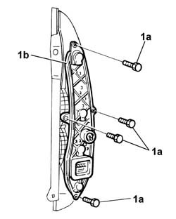
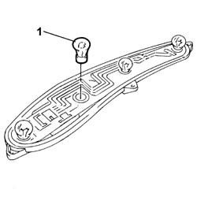
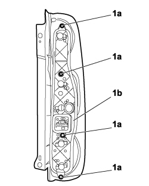
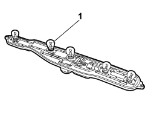

5540A50 tail-light bulb (one), lh or rh - replace
- Path
- Procedures > 55 ELECTRICAL EQUIPMENT > 5540 EXTERIOR LIGHTING > 5540A lighting > 5540A50 tail-light bulb (one), lh or rh - replace
- Kind
- repair procedure (removal / refitting; the operation number is the code)
- Applies to
- all engines; all production periods
- Interactive page
- https://sloeber94.github.io/elrnDB-fDbl/en/#/2584934
Applies to: engines: 1.2 8v, 1.6 16v, 1.3 JTD 16V, 1.9 JTD 8V, 1.9 DIESEL; all production periods
 Removing
Removing
 Refitting
RefittingDisconnect the battery negative terminal.
Op. 5540A44 REAR LIGHT CLUSTER (ONE), LEFT OR RIGHT - R.R.
1. Undo the bolts (1a) and remove the bulb holder (1b).

Applies to: engines: 1.2 8v, 1.6 16v, 1.3 JTD 16V, 1.9 JTD 8V, 1.9 DIESEL; all production periods
1. Turn the bulb 1/4 of a turn and remove it.

Applies to: engines: 1.2 8v, 1.6 16v, 1.3 JTD 16V, 1.9 JTD 8V, 1.9 DIESEL; all production periods
Refitting
RemovingFit a new bulb in the seating.
Fit the bulb holder in the cluster and secure using the bolts.
Op. 5540A44 REAR LIGHT CLUSTER (ONE), LEFT OR RIGHT - R.R.
Connect the battery negative terminal.
Check that the new bulb is working.
Applies to: engines: 1.4 8v, 1.6 16v, 1.3 JTD 16V, 1.9 JTD 8V; production: da 12/03; only with equipment: MY 2005
Removing
Refitting- Turn the ignition key to the OFF position.
- Lift the bonnet
- Disconnect the negative battery terminal.
Description | Connector | |
|---|---|---|
BATTERY |
Op. 5540A44 REAR LIGHT CLUSTER (ONE), LEFT OR RIGHT - R.R.
1. Undo retaining bolts (1a) and remove the bulb mount (1b).

Applies to: engines: 1.4 8v, 1.6 16v, 1.3 JTD 16V, 1.9 JTD 8V; production: da 12/03; only with equipment: MY 2005
1. Turn the bulb and remove.

Applies to: engines: 1.4 8v, 1.6 16v, 1.3 JTD 16V, 1.9 JTD 8V; production: da 12/03; only with equipment: MY 2005
Refitting
Removing- Check the condition of the bulb and make sure that it is clean.
- Fit the bulb in its seat and turn as required.
- Position the bulb mount in the housing and tighten the fixing bolts.
Op. 5540A44 REAR LIGHT CLUSTER (ONE), LEFT OR RIGHT - R.R.
- Connect the negative battery terminal.
Description | Connector | |
|---|---|---|
BATTERY |
- Check that the bulb is working.